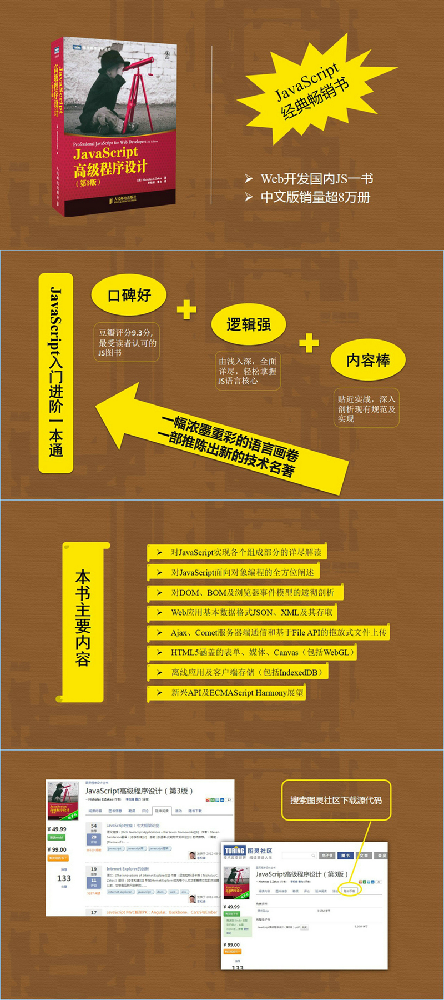

商品详情

作为JavaScript技术经典名著，《JavaScript高级程序设计（第3版）》承继了之前版本全面深入、贴近实战的特点，在详细讲解了JavaScript语言的核心之后，条分缕析地为读者展示了现有规范及实现为开发Web应用提供的各种支持和特性。
《JavaScript高级程序设计（第3版）》主要内容包括：
对JavaScript实现各个组成部分的详尽解读；
对JavaScript面向对象编程的全方位阐述；
对DOM、BOM及浏览器事件模型的透彻剖析；
Web应用基本数据格式JSON、XML及其存取；
Ajax、Comet服务器端通信和基于File API的拖放式文件上传；
HTML5涵盖的表单、媒体、Canvas（包括WebGL）；
离线应用及客户端存储（包括IndexedDB）；
新兴API及ECMAScript Harmony展望。